Walk-Thru: CRI Processing¶
This walk-thru will take you through several steps:
The screenshots within this manual may or may not reflect the exact look of the version of CRIkit2 UI that you are using.
Overview¶
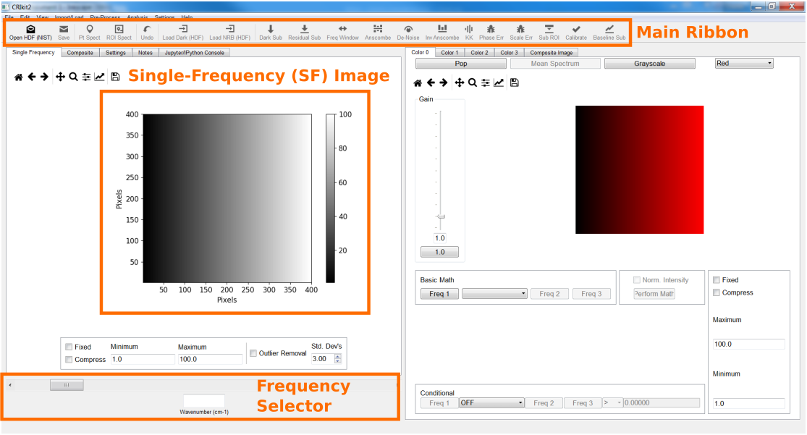Generating the built-in Raman/BCARS numerical phantom¶
CRIkit2 comes with a built-in numerical phantom, which is dervived from an actual BCARS image collected from murine pancreas tissue [Camp16]. This numerical phantom may be used as a Raman or a BCARS model. The Raman model produces an HSI wherein each pixel contains a Raman spectrum. The BCARS model incorporates a nonresonant background (NRB) and excitation source profile; thus, generating raw BCARS spectra, similar to those generated here at NIST [Camp14].
Help >> BCARS Numerical Phantom
- Check Noise and Dark check boxes.
- Check Gaussian (AWGN)
Std Dev: 12.44
- Check Poisson
Multiplier (alpha): 1.4
- Check Dark Constant
Level: 1600.0
- Select Subsampling
Subsampling will reduce the memory and performance burden on your computer.
This tutorial will demonstrate with 1x (no sub-sampling), but you can feel free to use up to 4x to make things speedier.
Press Ok pushbutton.
There now is a fully loaded BCARS phantom. Additionally, the NRB reference is loaded (View >> NRB Spect) and the Dark spectrum is loaded (View >> Dark Spect).
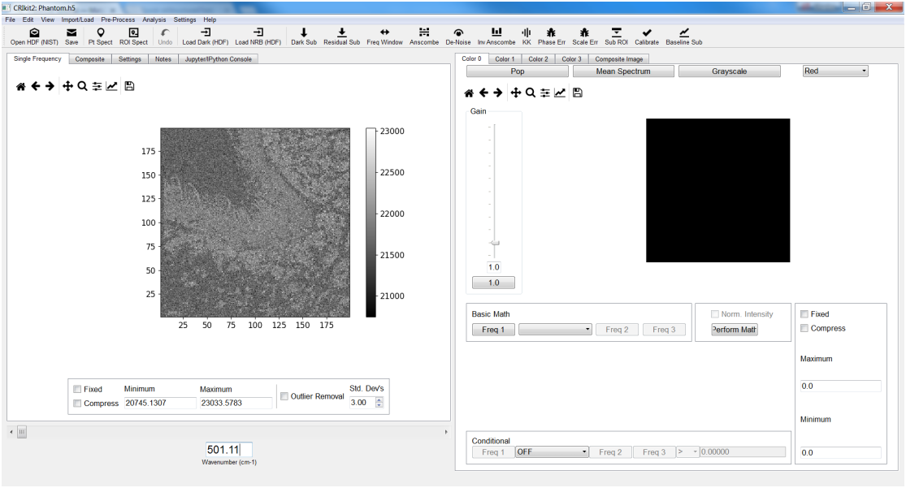Viewing dark, NRB, and dataset spectra¶
To view the loaded Dark spectrum(a):
View >> Dark Spect
To view the loaded NRB spectrum(a):
View >> NRB Spect
There are two primary methods to view spectra from within the dataset: point spectra and ROI spectra.
To view the spectrum from a single point within the dataset (2 methods):
View >> Pt Spect
Click the Pt Spect button on the main ribbon
Either method will change your cursor into a cross. Select a pixel within the single-frequency (SF) image and left-click. This will pop-up the plotter window with the spectrum.
To view the mean spectrum from within an ROI (2 methods):
View >> ROI Spect
Click the ROI Spect button on the main ribbon
Again, either method will change your cursor into a cross. The ROI is defined by a polyhedron within the single-frequency (SF) image. Select vertices with a left-click with your mouse. Close the polyhedrom with a single right-click. The location of the right-click does not matter as this only indicates to connect the last selected vertex and the first. This will pop-up the plotter window with 2 components: the mean spectrum (dark, solid line) and a patch (lighter, solid shading) that indicates plus-minus 1 standard deviation.

Dark subtraction¶
The dark signal is the intrinsic signal level generated by the detector, even when no photons are incident on the detector. Typically, a measurement is made with the detector (or incident) sources blocked.
Under normal operation, you would load a dark spectrum(a) from an external file. During the generation of the BCARS numerical phantom, the dark signal is co-generated.
To subtract the dark spectrum(a) from the HSI (2 methods):
Pre-Process >> Dark Sub…
Click the Dark Sub button on the main ribbon
Two pop-up dialog boxes will appear:
Subtract Dark Spectrum from Image?: Click: OK
Subtract Dark Spectrum from NRB Spectrum(a)?: Click: OK
Variance stabilization¶
CRIkit2 provides variance stabilitization through the forward Anscombe transformation that enables signals with mixed additive white Gaussian noise (AWGN) and shot-noise (Poisson) to be transformed into a signal with approximately uniform AWGN only [Foi13]. Conversely, CRIkit2 provides an exact, unbiased inverse of the generalized Anscombe variance-stabilizing transform [Foi13].
Many denoising and factorization methods, such as principle component analysis (PCA), singular value decomposition (SVD), nonnegative matrix factorization (NMF); explicitly or implicitly assume a normal (i.e., Gaussian) distribution of noise (and signals). Thus, variance stabilization may aid actions involving such tasks [Camp16].
In this tutorial, we will use the Anscombe transformation prior to SVD denoising. Additionally, we will apply the inverse Anscombe transform after SVD denoising.
To perform the forward Anscombe transformation (2 methods):
Pre-Process >> Standardize >> Anscombe
Click the Anscombe button on the main ribbon
A pop-up dialog will appear asking for two necessary pieces of information:
The standard deviation of the AWGN
The shot-noise (Poisson) noise multiplier
Normally, one would need to calculate/measure or estimate these parameters, but the numerical phantom, by default, applies:
Gaussian noise standard deviation: 12.44
Poisson noise gain: 1.4
Denoising via singular value decomposition (SVD)¶
SVD is a linear algebra method that transforms a matrix into the multiplication of three matrices: the left-singular vectors matrix, the singular value matrix, and the right-singular vector matrix. The use of SVD for denoising has been extensively explored for both traditional computer imagery [Narendra75] [Patterson75], and CRI [Camp16] [Lee11].
In short, SVD will decompose the CRI image into a series of images and spectra. Ideally, the spectra/images that contain real (ie non-noise) signal contributions are totally separate from those containing noise. One can thus reconstruct a noiseless image from the noise-free images/spectra decompositions.
CRIkit2 performs the SVD decomposition and raises a new user interface (UI) that displays the decomposed images and spectra, providing information to the user to interactively select those with minimal noise.
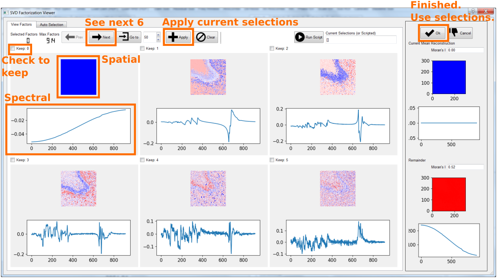Recommendations:
Select all singular values with visible spatial or spectral components
Remember to press Apply button after selections to-keep of current 6 displayed.
Press Next pushbutton to view next 6 components.
Press Ok pushbutton to recompose the CRI image with only selected components.
In this tutorial, selections [0,1,2,3,4,5,6] are kept (7 total).
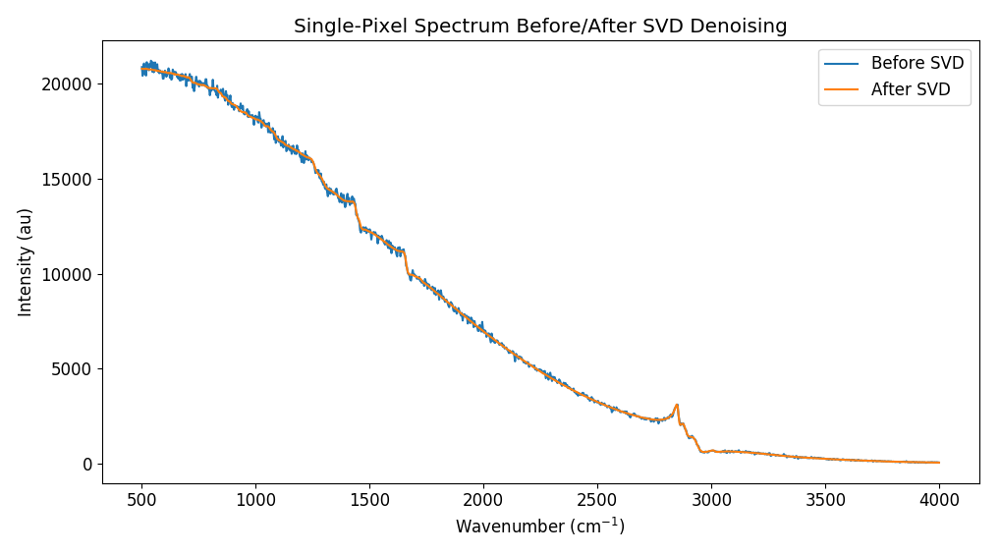Note: The example spectra are before Anscombe-SVD; and after Anscombe-SVD-inverse Anscombe.
The inverse Anscombe transformation¶
CRIkit2 provides an exact, unbiased inverse of the generalized Anscombe variance-stabilizing transform to convert the variance-stabilized image back into a mixed-noise version [Foi13].
To perform the inverse Anscombe transformation (2 methods):
Pre-Process >> Standardize >> Inv Anscombe
Click the Inv Anscombe button on the main ribbon
A pop-up dialog will appear asking for two necessary pieces of information:
The standard deviation of the AWGN
The shot-noise (Poisson) noise multiplier
Note: these values will be pre-filled with the values entered from the forward Anscombe transformation. It would be unusual to not use these values.
Phase retrieval via Kramers-Kronig relation¶
In CRI imagery acquired through CARS methods, phase retrieval methods are used to separate CARS and NRB signal contribution, i.e. to extract the Raman spectral signatures [Liu09] [Camp16].
CRIkit2 provides access to a Kramers-Kronig (KK) relation implemented using a Fourier transform-based Hilbert transform [Camp16].
This KK implementation requires an approximate NRB, which may be imported through several means:
Selection of a ROI (e.g., selecting an ROI of water)
Spectra imported from an external file
Merging two NRB spectra from ROI’s or external files.
During the generation of the BCARS numerical phantom, the NRB signal is co-generated and loaded.
To perform the KK (2 methods):
Pre-Process >> Coherent Raman Imaging >> KK
Click the KK button on the main ribbon
This dialog enables fine-tuning of several parameters:
NRB bias (constant to add/subract from NRB spectrum)
CARS bias (constant to add/subract from all HSI spectra)
Phase offset (constant phase to add/subtract to all KK’d spectra)
Pad factor (window-padding multiple of spectral length [Liu09])
The Interative Setting Selection provides preview spectra of several spectra. These spectra are the mean of the 4 quandrants (i.e. fourths) of the total image and the center fourth.
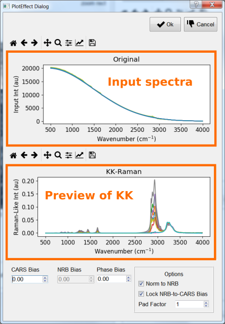For this tutorial:
CARS/NRB bias: 0
Phase Offset: 0
Pad Factor: 1
When finished press Ok pushbutton.
Phase error correction¶
The KK relation will extract Raman signatures accurately under certain conditions, one being that the NRB can be separately measured and provided – at every pixel. This condition, however, can not readily be met; thus, reference NRB are typically utilized. An ideal reference NRB should not contain any Raman peaks within the spectral region of interest. Typical examples are glasses, salts, and water [Camp14] [Camp16] [Karuna16].
Unfortunately, the use of a reference (i.e., non-exact) NRB results in amplitude and phase error. Phase error correction and scale error correction correct for these complex errors. Phase error correction is performed by finding the slowly varying baseline of the spectral phase at each pixel.
CRIkit2 uses an asymmetric least-squares (ALS) method [Eilers05]. The custom implementation 3 main parameters:
P (asymmetry parameter)
Lambda (smoothness parameter)
Sub-sampling factor (sub-sample the spectra to improve speed)
Note: This is typically the slowest processing step in the workflow. A 300 x 300 x 900 pixel image with no sub-sampling of the ALS may require 45 minutes or longer to complete.
Additionally, this dialog allows for a fixed P-value across the spectrum or a log-linear P-value that varies across the spectrum. For this tutorial we will use the Fixed-P.
To perform phase error correction (2 methods):
Pre-Process >> Coherent Raman Imaging >> Phase Err…
Click the Phase Err button on the main ribbon
Recommendations:
The sub-sampling parameter will increase the speed of the detrending (potentially quadratically), but at the expense of accuracy.
Though P- and Lambda-values are independent, the most important factor is the ratio of the two.
There may be window-edge errors at the extreme points of spectra. The Fix End-Points option may correct these distortions; though, for extremely minor baseline correction, this may cause more harm than help.
The exact settings are a function of the particular optical system’s resolution, spectral sampling, and reference material used.
This tutorial and the numerical phantom, unlike real experiments, provides the exact NRB; thus, phase-error is extremely small (numerical error).
For this tutorial:
Fixed-P: 1e-6
Lambda: 1
Sub-Sampling Factor: 10
Max Iterations: 100
Min Difference: 1e-6
Fix End-Points: False (Unchecked)
For typical experiments:
Fixed-P: 1e-4 to 1e-2 (increment by half order-of-magnitude)
Lambda: 1
Sub-Sampling Factor: 10
Max Iterations: 100
Min Difference: 1e-6
Fix End-Points: True (Checked)
When finished press Ok pushbutton.
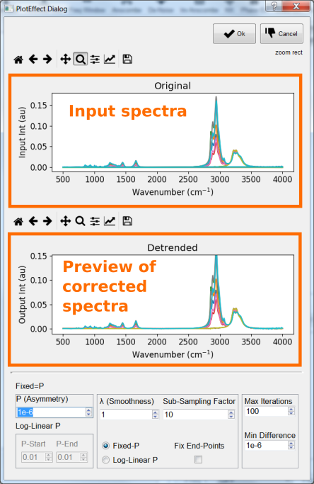Scale error correction¶
The use of a reference (i.e., non-exact) NRB results in amplitude and phase error. Phase error correction and scale error correction correct for these complex errors. Scale error correction is performed by finding the median trend line that bisects the real portion of the complex spectra at each pixel [Camp16].
CRIkit2 uses a Savitky-Golay filter to find a smooth median line, which requires 2 parameters:
Window width (sliding-window width to polynomial fit). Must be odd-valued.
Order (order of polynomial to fit)
To perform phase error correction (2 methods):
Pre-Process >> Coherent Raman Imaging >> Scale Err…
Click the Scale Err button on the main ribbon
Recommendations:
Set the order to 1 or 2
Expand the window width to a large enough value that the median line approximately bisects the shown spectra.
The exact settings are a function of the particular optical system’s resolution, spectral sampling, and reference material used.
Typical experimental values:
Window width: 601
Order: 2
When finished press Ok pushbutton.
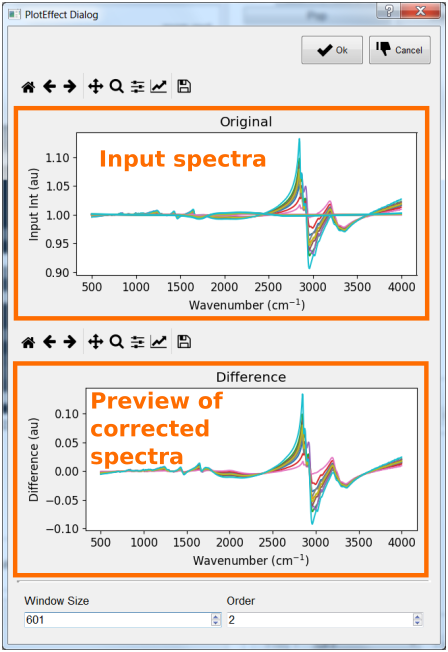Calibration¶
CRIkit2 provides a UI for single-peak calibration that properly accounts for the nonlinear relationship between wavenumber and wavelength (i.e. what spectrometers measure across) in BCARS.
In typical bio-experiments, we utilize the 1,004 cm-1 peak (phenylalanine) [DeGelder07].
To use a different peak, change the Correct WN value to the new peak wavenumber and fill-in the Measured WN with what the average spectra show within the upper plot.
To perform calibration (2 methods):
Edit >> Calibrate
Click the Calibrate button on the main ribbon
Recommendations
Click the Zoom button on the upper plot and select around the 1,004 cm-1 region.
Enter the actual peak location in the Measured WN box.
If the spectra do not reveal a feature of interest, return (click Cancel) to the main UI and use the ROI Spect or Pt Spect to plot the spectrum from a pixel(s) of interest. Identify the location of the particular calibration peak. Re-open the calibration tool (ignore the plots) and enter the Correct WN and Measured WN values.
For this tutorial there is no calibration necessary. Click Cancel pushbutton.
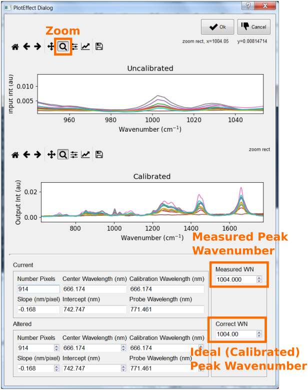Saving¶
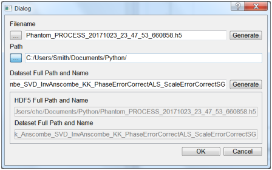Pseudo-color imagery¶
Nuclei:
Color 0 tab
Color drop-down box setting: Yellow
Math function: “Peak b/w Troughs”
Peak (Freq 1 button): 786 cm-1
Trough 1 (Freq 2 button): 767 cm-1
Trough 2 (Freq 3 button): 809 cm-1
Conditional math function: “SUM”
Start freq (Freq 1 button): 2700 cm-1
Stop freq (Freq 1 button): 3000 cm-1
Conditional comparitor: “>”
Conditional value: 1.0
Minimum value setting: 0.002
Phenylalanine:
Color 1 tab
Color drop-down box setting: Magenta
Math function: “Peak b/w Troughs”
Peak (Freq 1 button): 1002 cm-1
Trough 1 (Freq 2 button): 986 cm-1
Trough 2 (Freq 3 button): 1019 cm-1
Conditional math function: “SUM”
Start freq (Freq 1 button): 2700 cm-1
Stop freq (Freq 1 button): 3000 cm-1
Conditional comparitor: “>”
Conditional value: 1.0
Minimum value setting: 0.002
Structural Proteins:
Color 2 tab
Color drop-down box setting: Cyan
Math function: “Peak b/w Troughs”
Peak (Freq 1 button): 937 cm-1
Trough 1 (Freq 2 button): 902 cm-1
Trough 2 (Freq 3 button): 980 cm-1
Conditional math function: “SUM”
Start freq (Freq 1 button): 2700 cm-1
Stop freq (Freq 1 button): 3000 cm-1
Conditional comparitor: “>”
Conditional value: 1.0
Minimum value setting: 0.002
Elastin:
Color 3 tab
Color drop-down box setting: B&W (Black-and-white)
Math function: “Peak b/w Troughs”
Peak (Freq 1 button): 525 cm-1
Trough 1 (Freq 2 button): 513 cm-1
Trough 2 (Freq 3 button): 540 cm-1
Conditional math function: ” / “
Start freq (Freq 1 button): 1003 cm-1
Stop freq (Freq 1 button): 1029 cm-1
Conditional comparitor: “>”
Conditional value: 1.4
Minimum value setting: 0.0006
Skipped actions in a normal CRI workflow¶
Loading HDF file Hsi dataset¶
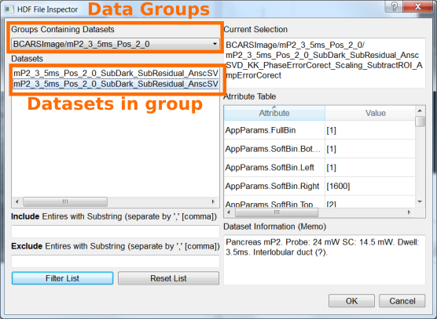Loading Dark dataset¶
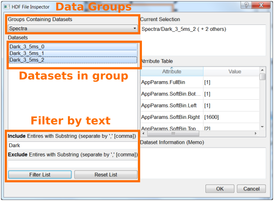Denoise Dark (Optional)¶

Loading an NRB from HDF file¶
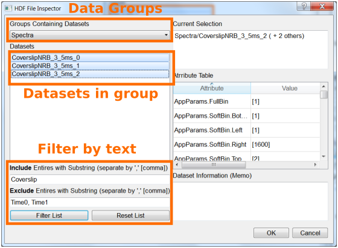Load an NRB from a region-of-interest (ROI)¶
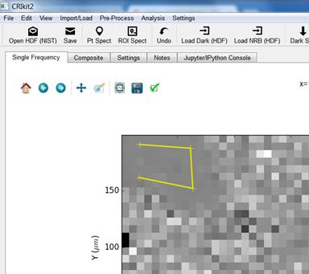Merge two NRB datasets¶
Residual dark subtraction (Optional)¶
References¶
- Camp14(1,2)
C. H. Camp Jr, Y. J. Lee, J. M. Heddleston, C. M. Hartshorn, A. R. Hight Walker, J. N. Rich, J. D. Lathia, and M. T. Cicerone, “High-Speed Coherent Raman Fingerprint Imaging of Biological Tissues,” Nat. Photonics 8, 627–634 (2014).
- Camp16(1,2,3,4,5,6,7)
C. H. Camp Jr, Y. J. Lee, and M. T. Cicerone, “Quantitative, comparable coherent anti-Stokes Raman scattering (CARS) spectroscopy: correcting errors in phase retrieval,” J. Raman Spectrosc. 47, 408–415 (2016).
- DeGelder07
J. De Gelder, K. De Gussem, P. Vandenabeele, and L. Moens, “Reference database of Raman spectra of biological molecules,” J. Raman Spectrosc. 38, 1133–1147 (2007).
- Eilers05
P. H. C. Eilers and H. F. M. Boelens, “Baseline Correction with Asymmetric Least Squares Smoothing,” (Unpublished, 2005). https://zanran_storage.s3.amazonaws.com/www.science.uva.nl/ContentPages/443199618.pdf
- Foi13(1,2,3)
M. Mäkitalo and A. Foi, “Optimal inversion of the generalized anscombe transformation for Poisson-Gaussian noise,” IEEE Trans. Image Process. 22, 91–103 (2013).
- Karuna16
A. Karuna, F. Masia, P. Borri, and W. Langbein, “Hyperspectral volumetric coherent anti-Stokes Raman scattering microscopy: quantitative volume determination and NaCl as non-resonant standard,” J. Raman Spectrosc. 47, 1167–1173 (2016).
- Lee11
Y. J. Lee, D. Moon, K. B. Migler, and M. T. Cicerone, “Quantitative image analysis of broadband CARS hyperspectral images of polymer blends,” Anal. Chem. 83, 2733–2739 (2011).
- Liu09(1,2)
Y. X. Liu, Y. J. Lee, and M. T. Cicerone, “Broadband CARS spectral phase retrieval using a time-domain Kramers-Kronig transform,” Opt. Lett. 34, 1363–1365 (2009).
- Narendra75
T. S. Huang and P. M. Narendra, “Image restoration by singular value decomposition.,” Appl. Opt. 14, 2213–6 (1975).
- Patterson75
H. C. Andrews and C. L. Patterson, “Outer Product Expansions and Their Uses in Digital Image Processing,” Am. Math. Mon. 82, 1–13 (1975).